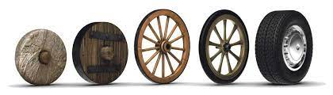
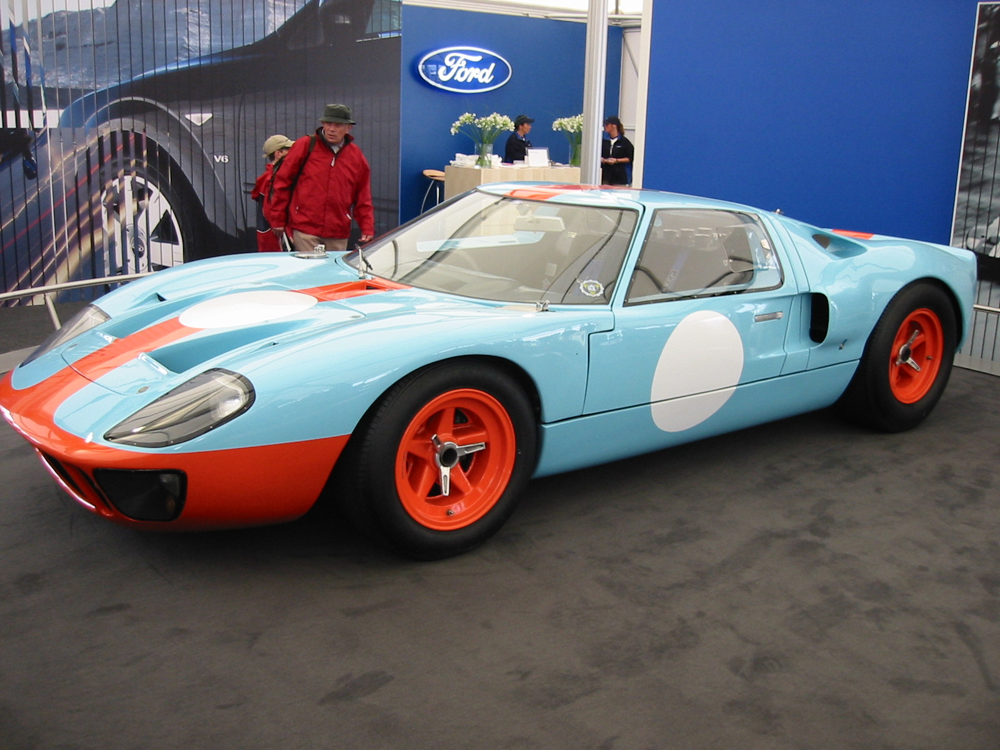

Bienvenido

El museo de los autos busca inmortalizar los mayores hitos del automovilismo para la eternidad trayendo de vuelta modelos extraños, olvidados, innovadores, famosos o importantes
Ford Shelby GT40

Por ejemplo este es el Ford Shelby GT40 diseñado por Shelby para posteriormente ser comprado por Ford. Ford lo compro cuando quizo entrar al mundo de las competiciones y con este auto es que le logro hacer frente a Ferrari